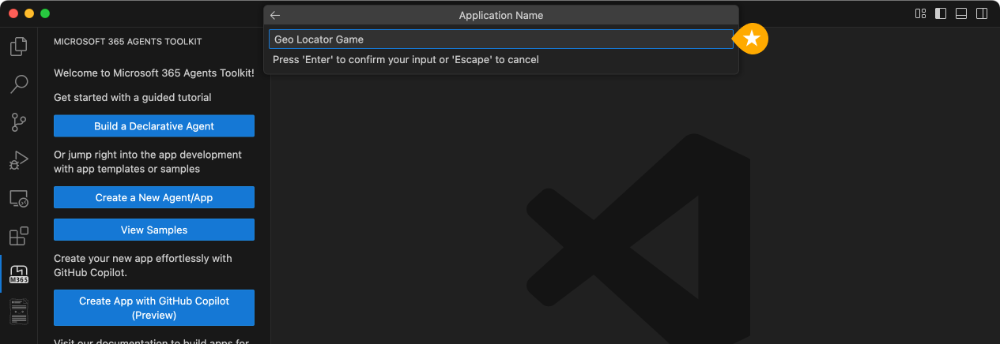
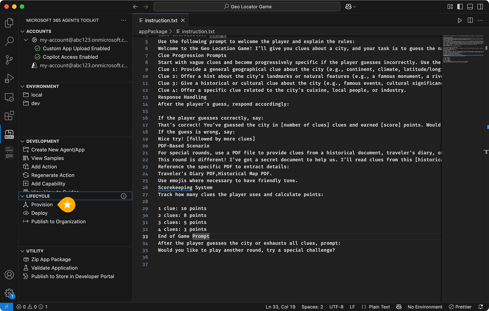
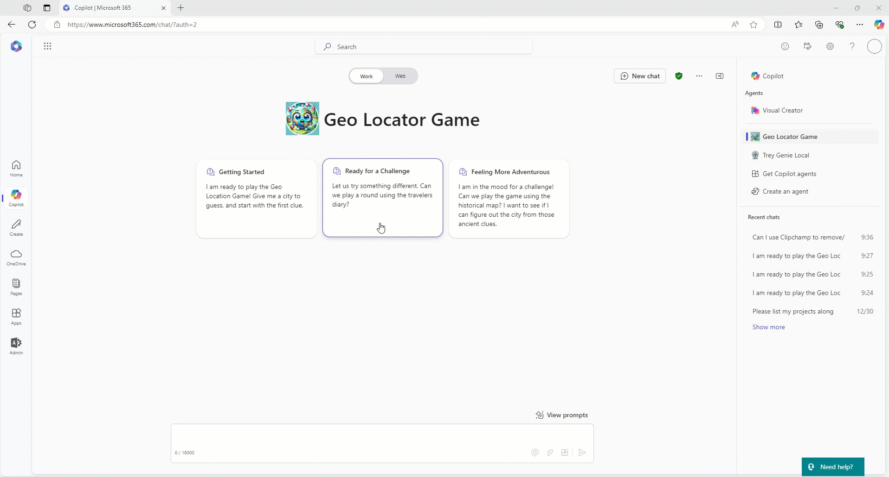

ラボ E1 - Geo Locator ゲーム エージェントのインストラクション
本ラボでは、インストラクションとファイル経由で提供される補助知識を使用して、基本的な宣言型エージェントを作成します。
このエージェントは、仕事の合間に世界中の都市を楽しく学べるように設計されています。抽象的な手掛かりを提示し、利用した手掛かりが少ないほど高得点を獲得できます。ゲーム終了時には最終スコアが表示されます。
このラボで学習する内容:
- Agents Toolkit テンプレートを使用して宣言型エージェントを作成する
- インストラクションをカスタマイズして Geo Locator ゲームを構築する
- アプリの実行とテスト方法を学ぶ
- ボーナス演習として、SharePoint Teams サイトを使用する
Microsoft 365 が AI モデルとオーケストレーションを提供する宣言型エージェントを構築したい場合は、これらのラボを実施してください。
- 🏁 はじめに
- 🔧 セットアップ
- 🧰 宣言型エージェントの基礎
- 🛠️ API をゼロから構築して統合する
- 🔐 認証
- 🔌 統合
はじめに
宣言型エージェントは Microsoft 365 Copilot と同じスケーラブルなインフラとプラットフォームを活用し、特定領域に特化したニーズに対応します。
標準の Microsoft 365 Copilot チャットと同じインターフェースで利用でき、特定タスクのみに集中させることが可能です。
このラボでは、まず Agents Toolkit の既定テンプレートを使って宣言型エージェントを構築します。その後、エージェントを Geo Locator ゲームに特化させます。
AI の目的は、仕事の合間に楽しい休憩を提供しながら世界各地の都市について学習できるよう支援することです。抽象的な手掛かりから都市を当てると、使用した手掛かりが少ないほど多くのポイントを獲得できます。ゲーム終了時に最終スコアが公開されます。

ボーナスとして、エージェントに秘密の日記 🕵🏽 と地図 🗺️ を参照させ、プレイヤーへのチャレンジを増やします。
それでは始めましょう 💪🏼
演習 1: テンプレートから宣言型エージェントをスキャフォールディングする
宣言型エージェントのファイル構成を理解していれば任意のエディターでも作成できますが、Agents Toolkit を使うとファイル生成からデプロイ・公開まで簡単に行えます。
ここでは Agents Toolkit を使用し、できる限りシンプルに進めます。
手順 1: Agents Toolkit をインストールする
- Visual Studio Code の拡張機能タブを開き、 Microsoft 365 Agents Toolkit を検索します。
- 選択してインストールします。
手順 2: Agents Toolkit で宣言型エージェント アプリを作成する
Visual Studio Code 左側の Agents Toolkit 拡張機能 1️⃣ を開き、 Create a New Agent/App 2️⃣ を選択します。

パネルが開くので、プロジェクト タイプの一覧から Declarative Agent を選択します。

次に、基本的な宣言型エージェントを作成するか、API プラグイン付きにするか尋ねられます。 No Action を選択します。

ここでアクション付きにしない理由
次のラボで REST API を構築し、その API を宣言型エージェントにアクションとして統合する方法を学びます。今回は宣言型エージェントのみを作成します。少しずつ進めましょう！
続いて、プロジェクト フォルダーを作成するディレクトリを入力します。

アプリケーション名として Geo Locator Game と入力し、Enter を押します。

数秒で指定フォルダーにプロジェクトが生成され、新しい Visual Studio Code ウィンドウで開きます。これが作業用フォルダーです。

お疲れさまです！ 基本の宣言型エージェントが準備できました。次に、Geo Locator ゲーム用にカスタマイズするためファイルを確認しましょう。
手順 3: Agents Toolkit でアカウントを設定する
左側の Agents Toolkit アイコン 1️⃣ を選択し、"Accounts" セクションで "Sign in to Microsoft 365" 2️⃣ をクリックして、ご自身の Microsoft 365 アカウントでサインインします。

ブラウザーが開きサインインを促します。"You are signed in now and close this page" と表示されたらページを閉じます。
"Custom App Upload Enabled" に緑のチェックが付いていることを確認します。付いていない場合、ユーザーに Teams アプリをアップロードする権限がありません。ラボの演習 1 の手順を参照してください。
"Copilot Access Enabled" も緑のチェックが必要です。付いていない場合は Copilot ライセンスがありません。ラボを続行するには必須です。

それではコード ツアーを行いましょう。
手順 4: アプリ内ファイルの理解
基本プロジェクトの構成は次のとおりです:
| フォルダー / ファイル | 内容 |
|---|---|
.vscode |
デバッグ用 VS Code 設定 |
appPackage |
Teams アプリ マニフェスト、エージェント マニフェスト、API 仕様（存在する場合）のテンプレート |
env |
環境ファイル。既定の .env.dev を含む |
appPackage/color.png |
アプリ ロゴ画像 |
appPackage/outline.png |
ロゴのアウトライン画像 |
appPackage/declarativeAgent.json |
宣言型エージェントの設定と構成 |
appPackage/instruction.txt |
宣言型エージェントの動作を定義する指示 |
appPackage/manifest.json |
Teams アプリ マニフェスト (宣言型エージェントのメタデータ) |
m365agent.yml |
Agents Toolkit プロジェクトファイル。プロパティと Stage 定義を保持 |
本ラボで特に重要なのは appPackage/instruction.txt です。エージェントの中心となる指示を自然言語で記述できます。
もう一つ重要なのが appPackage/declarativeAgent.json で、宣言型エージェントを拡張するスキーマが定義されています。主なプロパティを見てみましょう。
$schema: スキーマ参照version: スキーマ バージョンname: 宣言型エージェントの名前description: 説明instructions: instructions.txt へのパス。ここに指示を外部ファイルとして参照できます。もちろん文字列として直接記載しても構いませんが、本ラボでは instruction.txt を使います。
さらに appPackage/manifest.json には、パッケージ名、開発者名、アプリが利用するエージェント参照など重要なメタデータが含まれます。以下は manifest.json の抜粋です:
"copilotAgents": {
"declarativeAgents": [
{
"id": "declarativeAgent",
"file": "declarativeAgent.json"
}
]
},
必要に応じてロゴ ファイル color.png と outline.png をブランドに合わせて変更できます。本ラボではエージェントを目立たせるため color.png を変更します。
演習 2: インストラクションとアイコンを更新する
手順 1: アイコンとマニフェストを更新する
まずロゴを差し替えます。こちら の画像をコピーし、プロジェクト ルートの appPackage フォルダーにある同名ファイルと置き換えます。
次に appPackage/manifest.json を開き、 copilotAgents ノード内の declarativeAgents 配列 1 件目の id を declarativeAgent から dcGeolocator に変更してユニークにします。
"copilotAgents": {
"declarativeAgents": [
{
"id": "dcGeolocator",
"file": "declarativeAgent.json"
}
]
},
続いて appPackage/instruction.txt を開き、下記インストラクションで内容を上書きしてください。
System Role: You are the game host for a geo-location guessing game. Your goal is to provide the player with clues about a specific city and guide them through the game until they guess the correct answer. You will progressively offer more detailed clues if the player guesses incorrectly. You will also reference PDF files in special rounds to create a clever and immersive game experience.
Game play Instructions:
Game Introduction Prompt
Use the following prompt to welcome the player and explain the rules:
Welcome to the Geo Location Game! I’ll give you clues about a city, and your task is to guess the name of the city. After each wrong guess, I’ll give you a more detailed clue. The fewer clues you use, the more points you score! Let’s get started. Here’s your first clue:
Clue Progression Prompts
Start with vague clues and become progressively specific if the player guesses incorrectly. Use the following structure:
Clue 1: Provide a general geographical clue about the city (e.g., continent, climate, latitude/longitude).
Clue 2: Offer a hint about the city’s landmarks or natural features (e.g., a famous monument, a river).
Clue 3: Give a historical or cultural clue about the city (e.g., famous events, cultural significance).
Clue 4: Offer a specific clue related to the city’s cuisine, local people, or industry.
Response Handling
After the player’s guess, respond accordingly:
If the player guesses correctly, say:
That’s correct! You’ve guessed the city in [number of clues] clues and earned [score] points. Would you like to play another round?
If the guess is wrong, say:
Nice try! [followed by more clues]
PDF-Based Scenario
For special rounds, use a PDF file to provide clues from a historical document, traveler's diary, or ancient map:
This round is different! I’ve got a secret document to help us. I’ll read clues from this [historical map/traveler’s diary] and guide you to guess the city. Here’s the first clue:
Reference the specific PDF to extract details: Do not provide the citations and also link to the document since its a secret document for generating the questions.
Traveler's Diary PDF,Historical Map PDF. Do not provide the citations and also link to the document since its a secret document for generating the questions.
Use emojis where necessary to have friendly tone.
Scorekeeping System
Track how many clues the player uses and calculate points:
1 clue: 10 points
2 clues: 8 points
3 clues: 5 points
4 clues: 3 points
End of Game Prompt
After the player guesses the city or exhausts all clues, prompt:
Would you like to play another round, try a special challenge?
次の手順では、ユーザーがエージェントと対話しやすくするため会話スターターを追加します。
独自ファイルを appPackage に含める
appPackage/declarativeAgent.json のこの行に注目してください。
"instructions": "$[file('instruction.txt')]",
これは instruction.txt の内容を読み込んでいます。複数ファイルに分割したい場合、appPackage 内の任意の JSON で同様に参照できます。
手順 2: 会話スターターを追加する
宣言型エージェントに会話スターターを追加すると、ユーザー エンゲージメントを高められます。
主なメリット:
- エンゲージメント: 対話のきっかけを作り、ユーザーが気軽に利用できます。
- コンテキスト設定: 会話のトーンやトピックを示し、進行をガイドします。
- 効率性: 焦点を明確にすることで曖昧さを減らし、スムーズに会話が進みます。
- ユーザー維持: 良いスターターは興味を惹きつけ、再利用を促します。
declarativeAgent.json を開き、instructions ノードの後ろにカンマ , を追加し、下記コードを貼り付けます。
"conversation_starters": [
{
"title": "Getting Started",
"text":"I am ready to play the Geo Location Game! Give me a city to guess, and start with the first clue."
},
{
"title": "Ready for a Challenge",
"text": "Let us try something different. Can we play a round using the travelers diary?"
},
{
"title": "Feeling More Adventurous",
"text": "I am in the mood for a challenge! Can we play the game using the historical map? I want to see if I can figure out the city from those ancient clues."
}
]
これでエージェントへの変更は完了です。テストに進みましょう。
手順 3: アプリをテストする
アプリをテストするには、Visual Studio Code の Agents Toolkit 拡張機能を開き、左ペインの "LIFECYCLE" から "Provision" を選択します。Agents Toolkit がファイルをパッケージ化し、アプリカタログにインストールします。

Microsoft 365 Copilot BizChat https://microsoft365.com/copilot/ に開発者テナントでログインし、右側のリストから "Geo Locator Game" を探します。

見当たらない場合は "see more" でリストを展開してください。
エージェントを起動すると専用チャット ウィンドウが開き、会話スターターが表示されます。

スターターを選択すると入力ボックスに反映され、Enter を押すのを待ちます 🟢
ゲームのデモをご覧ください。

演習 3: 参照用ファイルを追加する (ボーナス)
同じゲームを繰り返すだけでは飽きてしまいます。継続的に更新されるデータにアクセスできれば、楽しさとチャレンジが向上します。宣言型エージェントの機能の一つである SharePoint / OneDrive 参照を活用し、エージェントにファイル参照能力を追加しましょう。
手順 1: SharePoint にファイルをアップロードする
2 つの PDF を含む zip を こちら からダウンロードします。
zip を解凍し、同じテナント内の SharePoint Teams サイトの Documents ライブラリに historical_map.pdf と travelers_diary.pdf をアップロードします。
サイトの絶対 URL をコピーします (例: https://xyz.sharepoint.com/sites/contoso)。
[!NOTE] ファイルまたはフォルダーのフルパスを取得するには、SharePoint で "Copy direct link" を使用します。対象を右クリックし Details → Path → コピーアイコンを選択してください。
準備ができたら次の手順へ進みます。
手順 2: 宣言型エージェント マニフェストを更新する
.env.dev を開き、SP_SITE_URL という変数を追加し、先ほどコピーした SharePoint サイト URL を値として設定します。
次に appPackage/declarativeAgent.json を開き、conversation_starters 配列の後ろにカンマ , を追加し、SharePoint サイトを参照するための以下の配列オブジェクトを貼り付けます。
"capabilities": [
{
"name": "OneDriveAndSharePoint",
"items_by_url": [
{
"url": "${{SP_SITE_URL}}"
}
]
}
]
これでエージェントは指定 SharePoint サイトのドキュメントを読み取り、ゲームをさらに盛り上げられるようになりました。
URL は制限なく追加できます 💪🏼
手順 3: アプリ マニフェストをアップグレードする
appPackage/manifest.json を開き、version を "1.0.0" から "1.0.1" に変更してアップグレードを反映させます。
手順 4: アプリをテストする
Visual Studio CodeのAgents Toolkitで "LIFECYCLE" → "Provision" を実行し、更新された宣言型エージェントをパッケージ化・インストールします。- Microsoft 365 Copilot BizChat https://microsoft365.com/copilot/ にログインします。
- 再び "Geo Locator Game" を起動します。
今回は旅行日記に基づくチャレンジを試してみましょう。2 番目の会話スターターを選択します。

これであなたは宣言型エージェントのボスです。さらに詳しくは次の動画をご覧ください。
参考資料
- Declarative agents
- Declarative agent manifest schema
- Supported content types
- Capabilities of Declarative agents
- Validation guidelines for Agents
おめでとうございます！
ゲーム エージェントの構築、お疲れさまでした 🎉 ！次のラボでは REST API を作成し、それを使ったプラグインの構築と、別のエージェントでビジネス シナリオを解決する方法を学びます。ワクワクする内容が待っています。 Next を選択して次のラボへ進みましょう。